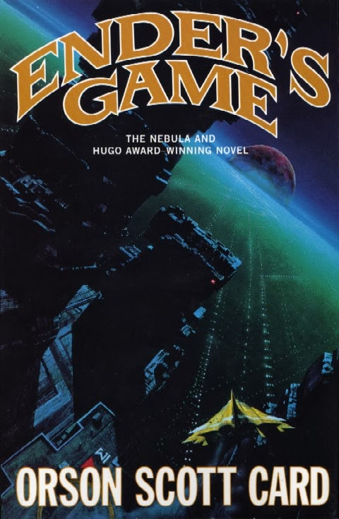
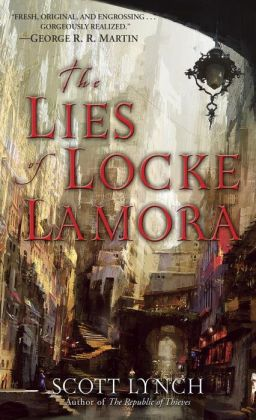
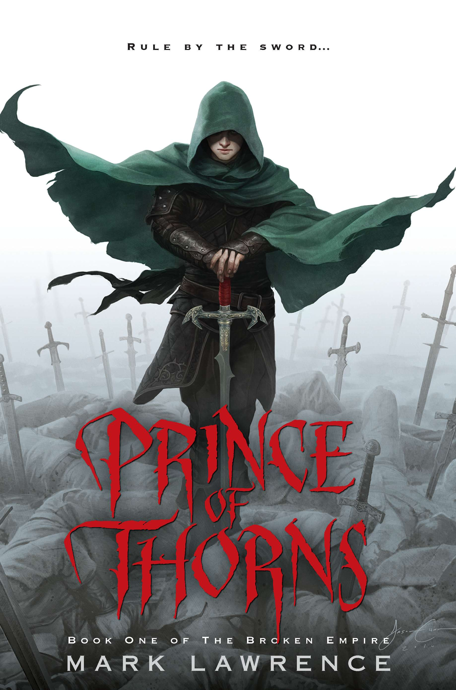

In the year 2045, reality is an ugly place. The only time teenage Wade Watts really feels alive is when he's jacked into the virtual utopia known as the OASIS. Wade's devoted his life to studying the puzzles hidden within this world's digital confines, puzzles that are based on their creator's obsession with the pop culture of decades past and that promise massive power and fortune to whoever can unlock them. When Wade stumbles upon the first clue, he finds himself beset by players willing to kill to take this ultimate prize. The race is on, and if Wade's going to survive, he'll have to win—and confront the real world he's always been so desperate to escape.
I really enjoyed the book. There were many references to the 80s and it was just a fun read. I would say the main
villian was a little flat but it still didn't effect the story much. I would recommend this book 9/10.
-Jack
P.S. The book is better than the movie (although I did enjoy the movie as well).
 Andrew "Ender" Wiggin thinks he is playing computer simulated war games; he is, in fact, engaged in something far more desperate. The result of genetic experimentation, Ender may be the military genius Earth desperately needs in a war against an alien enemy seeking to destroy all human life. The only way to find out is to throw Ender into ever harsher training, to chip away and find the diamond inside, or destroy him utterly. Ender Wiggin is six years old when it begins. He will grow up fast.
But Ender is not the only result of the experiment. The war with the Buggers has been raging for a hundred years, and the quest for the perfect general has been underway almost as long. Ender's two older siblings, Peter and Valentine, are every bit as unusual as he is, but in very different ways. While Peter was too uncontrollably violent, Valentine very nearly lacks the capability for violence altogether. Neither was found suitable for the military's purpose. But they are driven by their jealousy of Ender, and by their inbred drive for power. Peter seeks to control the political process, to become a ruler. Valentine's abilities turn more toward the subtle control of the beliefs of commoner and elite alike, through powerfully convincing essays. Hiding their youth and identities behind the anonymity of the computer networks, these two begin working together to shape the destiny of Earth-an Earth that has no future at all if their brother Ender fails.
Overall I really enjoyed Ender's Game. I even read the second book of the series which I liked even more.
Fun fact, this book and the second book, Speaker of the Dead, both won the nebula and hugo awards,
which are big awards for sci-fi and fantasy novels, and Orson Scott Card is the only one to get the awards twice in a row.
The third book in the series didn't fit with me well and I couldn't finish it, but I really enjoyed the first two.
The books make you want to figure things out and adds some twists that make you go oh... wow. Good read, would recommend
the first and second books 9/10 for the first book 9.5/10 for second.
-Jack
 An orphan’s life is harsh—and often short—in the mysterious island city of Camorr. But young Locke Lamora dodges death and slavery, becoming a thief under the tutelage of a gifted con artist. As leader of the band of light-fingered brothers known as the Gentleman Bastards, Locke is soon infamous, fooling even the underworld’s most feared ruler. But in the shadows lurks someone still more ambitious and deadly. Faced with a bloody coup that threatens to destroy everyone and everything that holds meaning in his mercenary life, Locke vows to beat the enemy at his own brutal game—or die trying.
While reading the book I didn't really feel like the story was going anywhere. Then I realized
that it was intended. Stuff was happening but it happened in a way that it was so subtle that by the end of it
you look back and think wow I didn't realize I was this invested in what was happening until it happened.
Relaxing and fun read. Haven't read the second book yet but am still planning to once I get some time.
I give this book a 8/10.
-Jack
 Before the thorns taught me their sharp lessons and bled weakness from me I had but one brother, and I loved him well. But those days are gone and what is left of them lies in my mother's tomb. Now I have many brothers, quick with knife and sword, and as evil as you please. We ride this broken empire and loot its corpse. They say these are violent times, the end of days when the dead roam and monsters haunt the night. All that's true enough, but there's something worse out there, in the dark. Much worse.
From being a privileged royal child, raised by a loving mother, Jorg Ancrath has become the Prince of Thorns, a charming, immoral boy leading a grim band of outlaws in a series of raids and atrocities. The world is in chaos: violence is rife, nightmares everywhere. Jorg has the ability to master the living and the dead, but there is still one thing that puts a chill in him. Returning to his father's castle Jorg must confront horrors from his childhood and carve himself a future with all hands turned against him.
Mark Lawrence's debut novel tells a tale of blood and treachery, magic and brotherhood and paints a compelling and brutal, and sometimes beautiful, picture of an exceptional boy on his journey toward manhood and the throne.
I can't say I would recommend this book to anyone. The main character is a villain, and it was a chore to get past
the first few chapters, but I didn't have anything better to read when I read this series (yes this is a series).
In this first book if I could compare anyone to the main protagonist it would be Jofree from the Game of Thrones. Yes,
he is that bad if not worse. Now, if you can force yourself past the first few chapters without ripping up the book from
how evil he is you can get into his backstory more and how all of this came to be. You can also see that
there is a handful of truly good people in the book, and almost everyone sucks. Jorg is evil, his dad is evil, the wizard is
evil. The characters are each well writen and have personalities, even if they are each evil in their own way. If you
have read a lot of fantasy and want to read a book that is completely different to anything else. Where villains fight
villains and you don't really root for anyone but just watch the chaos unfold, then you can read this book. Again
this book is not for everyone, a lot of bad stuff happens before you even get a hint at character building.
Overall 7.5/10, it's a story that makes you hate the main character so much you want to see it till the
end.
-Jack
| Book Title | Author | Overall Rating | Charecter Development | Story | How it made me feel |
|---|---|---|---|---|---|
| Ready Player One | Ernest Cline | 9/10 | 7.5/10 | 10/10 | Happy with some nostalgia. |
| Ender's Game | Orson Scott Card | 9/10 | 9/10 | 9/10 | Couldn't put the book down. |
| The Lies of Locke Lamora | Scott Lynch | 8/10 | 9/10 | 8/10 | Sometimes hard to get through but payoff is great and fun. |
| Prince of Thorns | Mark Lawrence | 7.5/10 | 9/10 | 7.5/10 | Disgusted but intrigued. |
| If you think its weird the books are all rated fairly high, I wouldn't finish them if they were bad. |
|||||